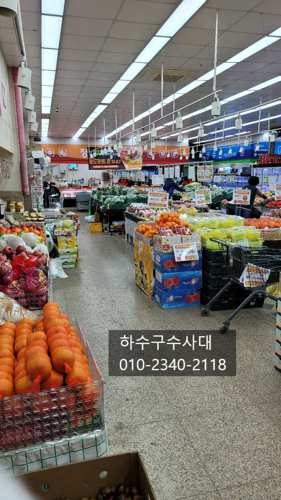
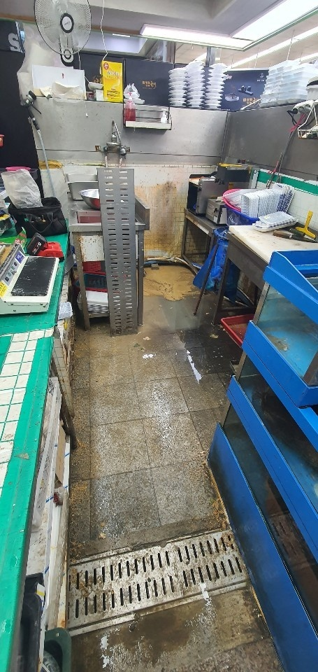
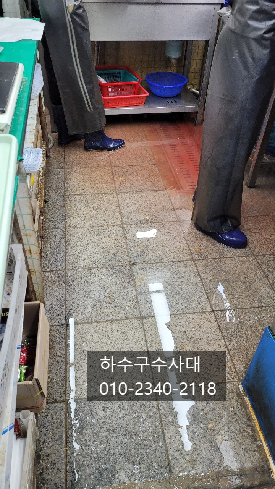
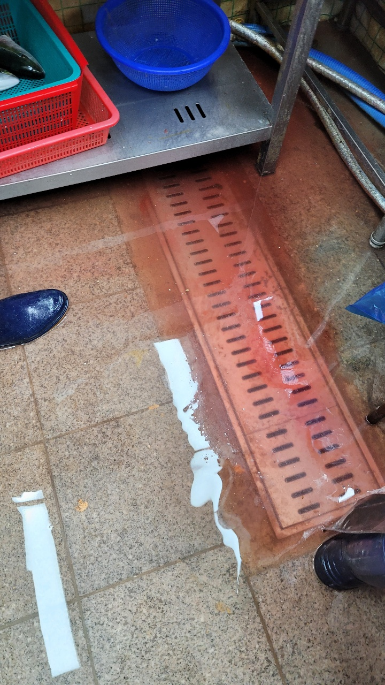
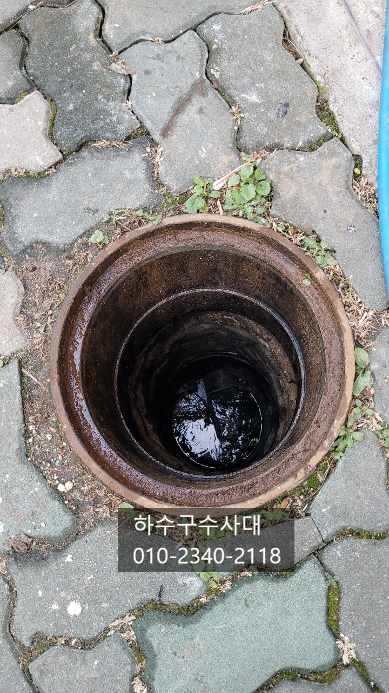
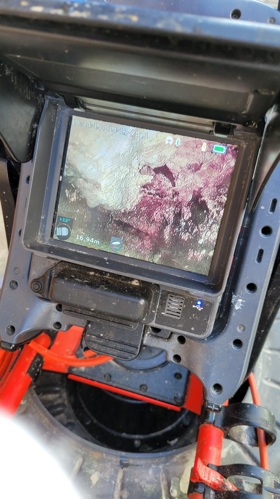
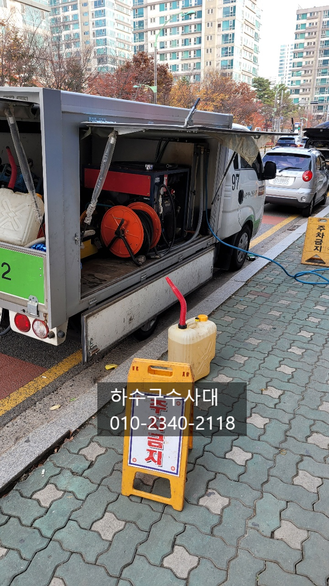

🏠 하수구배관청소 하수관 고압세척 및 배관세관
서울 하수구막힘 전문 시공 후기

📋 작업 개요
- 위치: 서울
- 서비스 유형: 하수구막힘, 배관막힘, 역류해결, 뚫는업체, 배관청소, 고압세척, 설비공사
- 작업 일시: 2021. 11. 15. 0:30
- 업체명: 하수구수사대 (010-5615-2118)
🔍 문제 상황
하수구배관청소 하수관 고압세척 및 배관세관
안녕하세요
"하수구수사대" 인사드립니다^^
공동으로 사용하는 하수구배관이 막히면
낮은 층으로 역류를 하게 되는데요
사용하지도 않은 물이 하수구에서 역류를 한다면
공동배관 즉 메인배관이 막혔다고 의심하면
됩니다.
오늘 현장은 마트내에 자리한 수산코너인데요
마찬가지로 메인배관 막힘증상으로 3층에서
사용하는 물이 1층으로 역류하는 증상입니다.
수산코너에서도 수산물 손질시 물을 많이 사용하는데
하수구가 막혀 물이 내려가지 않는 급한 상황입니다.
다행히 3층에서 물사용량이 많지않아 물이 마트까지
넘치지는 않았는데요 빠르고 정확한 해결을 위해
하수구수사대가 발빠르게 움직였습니다^^
우선 메인배관을 볼수 있는 오수받이를 열어서
내시경카메라로 확인을 하기로 하였습니다.
대체적으로 오수받이는 건물이 하나씩 있고
시관으로 나가기 정에 점검 및 관리를 위해 만들어
놓는데요 건물 전체에서 쓰는 물들이 오수받이를

🔎 원인 분석
💡 전문가 진단: 하수구수사대010-2340-2118
거쳐서 나가게 되어있습니다.
내시경카메라로 메인배관을 촬영해보니 기름슬러지로
배관이 심하게 막혀있는것을 확인하였습니다.
기름슬러지를 제거하는 방법은 몇가지 있지만
메인배관의 경우 배관이 크고 기름슬러지도 크기때문에
고압세척으로 깨끗하게 배관청소를 하기위해
분주하게 준비를 하였습니다.
고압세척은 물을 고압으로 분사하여 배관의
기름슬러지를 떨어뜨리는 방식으로
배관크기나 이물질에 따라 작업방식이 달라집니다.
보이는 사진은 기본노즐로 배관세척에는 없어서는
안될 장비중에 하나입니다. 노즐의 작은 구멍에서
강력한 물줄기로 배관을 세척하면 로켓트같은 추진력으로
힘차게 슬러지를 떨어뜨려 줄것입니다^^
하수구수사대
010-2340-2118
고압노즐이 분사해주는 물줄기의
힘이 엄청나기 때문에 고압작업을 장시간 하게되면
다음날 온몸이 뻐근할때도 있지만
배관이 깨끗해진 상태를 보면
보람도 느끼고 재미있을때가 더 많아요^^
힘차게 배관에 붙어있는 이물질을 떨어뜨리고

🔧 작업 과정
끌어당겨 꺼내는 작업을 반복해야합니다.
배관에서 오랜기간 붙어있던 이물질을
꺼내주었는데요 마치 돌덩어리 처럼 딱딱하게
굳어 있어 덩어리가 쉽게 나오지 않았어요.
보통 기름덩어리가 쌓이는 이유는
배관의 구배가 좋지않아 물이 고여있는 구간이
있는데 이곳에 기름기가 오랜기간 쌓여 딱딱하게
굳게 되는 과정을 거치게 됩니다.
막히게되면 보통은 스프링장비로 뚫게 되는데
스프링은 배관에 붙어있는 기름덩어리를 제거하기 보다는
하단부분에 막혀있는 부분만 뚫어 주기때문에
막힐때마다 반복적으로 스프링작업을 하게되면 막힘
증상이 점점 더 심해지다 결국 스프링으로도
못 뚫는 상황이 오게 됩니다.
이유는 기름덩어리에 기름이 점점 더 붙고
딱딱하게 되기 때문입니다.
오늘 현장도 스프링으로 여러번 뚫었고
뚫고 다시 막히는 기간이 점점 짧아 졌다고 합니다.
1차세척을 한후 중간점검을 하여
기름슬러지가 있는 구간을 확인하였습니다.
입구 초반에는 깨끗하게 세척이 되었지만
깊은곳은 아직 청소가 덜 되어 2차세척을 하기로
하였습니다.
메인배관의 경우 배관도 크고 건물전체가
사용하기때문에 관리가 쉽지않기 때문에
세척을 꼼꼼하게 하는것이 좋습니다.
내시경을 보면서 고압노즐로 기름덩어리를 제거하기
시작합니다.
고압세척시 가장 조심해야 될 사항이 있는데요
바로 고압호스가 배관에 들어가서 안나오는 경우입니다.
배관구조 파악과 알맞는 고압노즐을 선택해 주어야 하는데요
간혹 초보분들이 아무노즐이나 넣고 마구잡이로 작업을
하다가 배관에 박히는 경우가 되는데 이런경우 공사가
더 커질수 있으니 업체선택에 유의하셔야 합니다.
물론 "하수구수사대"는 12년간의 경력으로


✅ 작업 완료
수많은 경험이 있으니 안심하셔도 됩니다^^
배관청소를 하고 내시경검수는 필수인데요
고객님과 꼼꼼한 검수를 하고 현장 정리를 하고
나오고 철수 하였습니다.
이처럼 자주막히는 하수구는 근본적인 이유가 있는데요
원인을 확실히 파악하고 해결을 해야합니다.
저희 "하수구수사대"는
서울,경기,인천 전지역에서
활동중이오니 언제든지 연락주세요^^




⚠️ 하수구 배관 막힘 예방 및 관리 가이드
- ✅ 머리카락, 비닐, 물티슈 등 물에 분해되지 않는 이물질은 하수구 유입을 절대 금지해 주세요.
- ✅ 하수구 거름망을 씌우고 모여진 이물질은 주기적으로 쓰레기통에 바로 비워주셔야 합니다.
- ✅ 배관 노후가 심할 경우 이물질이 더 쉽게 걸리므로 주기적인 배관 세척(고압세척 등)을 권장합니다.
- ✅ 작업 후 1년 이내 재발 시 하수구수사대에서 무상 A/S 보증 서비스를 제공합니다.
💡 핵심 정리
- 확실한 장비 작업(내시경 점검 및 샤프트 스케일링)으로 원인을 뿌리 뽑습니다.
- 작업 후 1년 이내에 동일한 부위 재발 시 100% 무상 A/S 서비스를 보장합니다.
- 서울 · 경기 · 인천 전 지역에 24시간 언제든 긴급 출동할 수 있도록 항시 대기 중입니다.
❓ 자주 묻는 질문 (FAQ)
🚨 서울 하수구막힘 문제로 고민이신가요?
정확한 원인 진단과 확실한 시공으로 재발 없는 해결을 약속드립니다.
24시간 긴급 출동 | 서울 · 경기 · 인천 전지역 | 1년 내 재발 시 무상 A/S